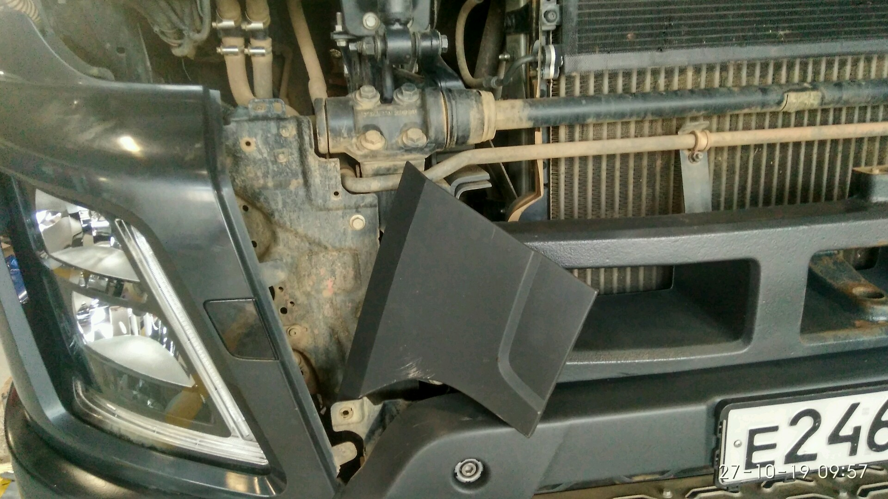

Реклама
Замена втулок стабилизатора кабины
Время выполнения:
? часов.Инструмент:
- Кран балка
- Домкрат
- Ключ *21
- Ключ *18
- Ключ торцовый или головка *18
- Ключ торцовый или головка *21
- Ключ торцовый или головка *10
- Шестигранник*18
- Пресс
Порядок действий:
- Поставить противооткаты
- Поднять кабину.
- Открутить подушки с 2-х сторон кабины. Использовать шестигранник. Если этого не сделать, то потом сложно будет подобраться к подушкам.
- Опустить кабину.
- Защитить стекло кабины от случайных повреждений
- Зацепить кабину на мягкий строп
- Сделать натяжку
- Снять облицовку кабины 3 элемента.
- Открутить крепления стабилизатора кабины
- Отрегулировать тормоза:
Минимальная толщина накладки 6мм. Меньше 6мм накладка на колодку подлежит замене. При регулировке, накладка должна прилегать к барабану. Зазора быть не должно!!!
Развести колодки до конца. Пока колесо перестанет крутиться
Открутить винт несколько оборотов в обратную сторону, пока колесо не станет крутиться. Крутим колесо рукой и отпускаем. После этого колесо должно немного (10 - 20 см) прокрутится по иннерции
Закрутить винт - ось энергоаккумуляторов. Головка *24 !!!
Полезные ссылки по теме:

